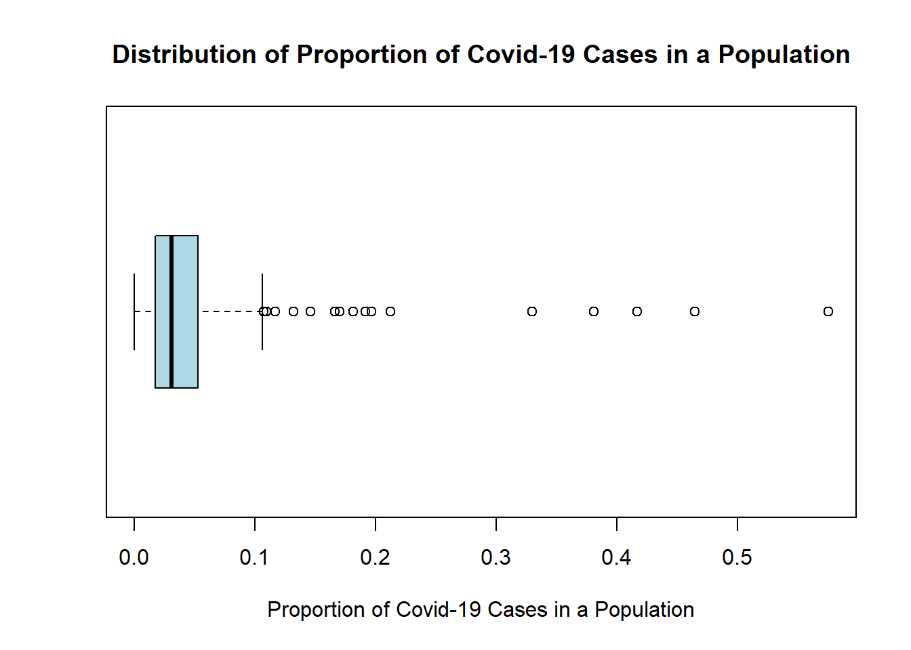
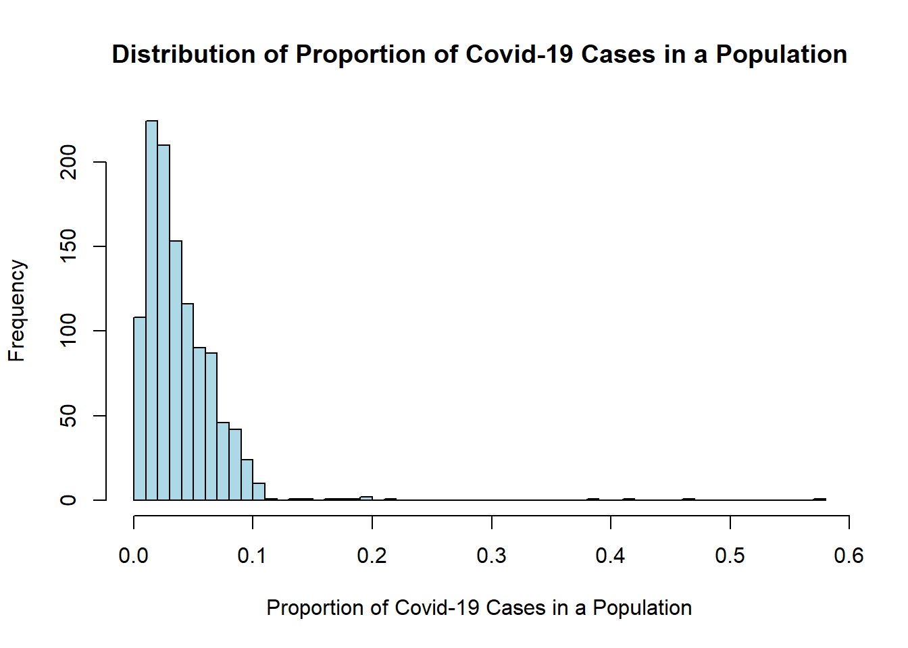
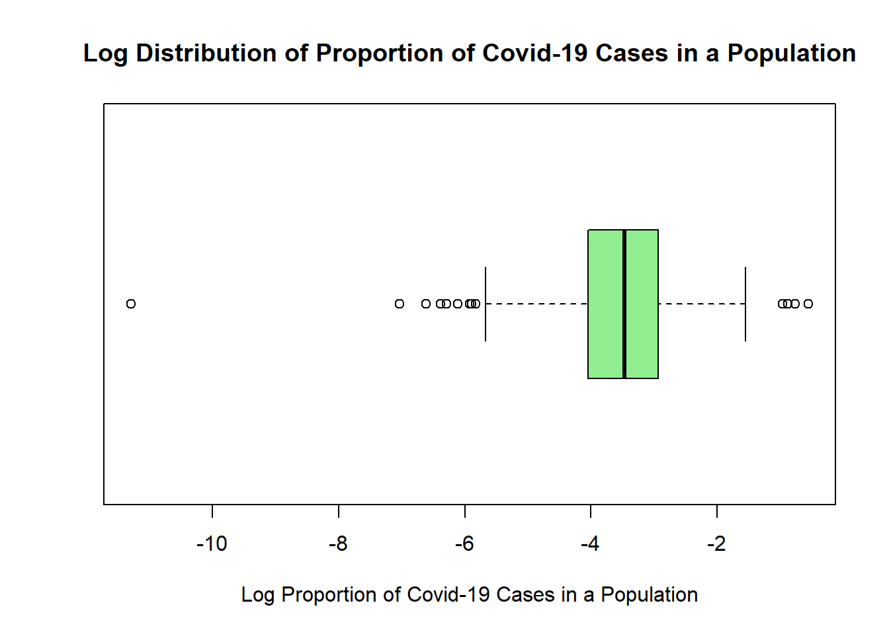
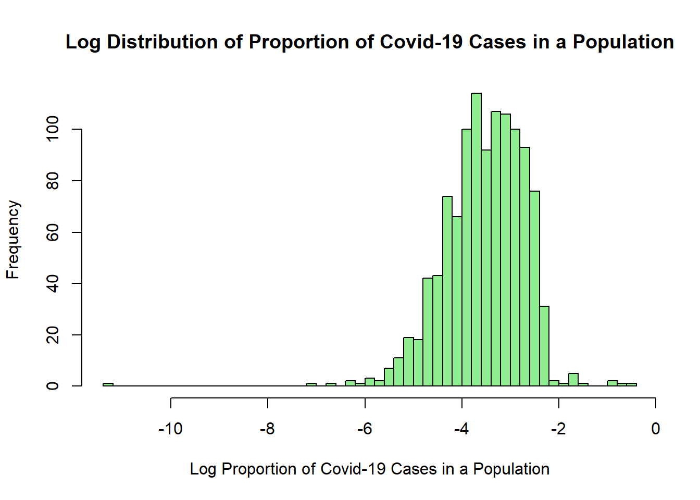
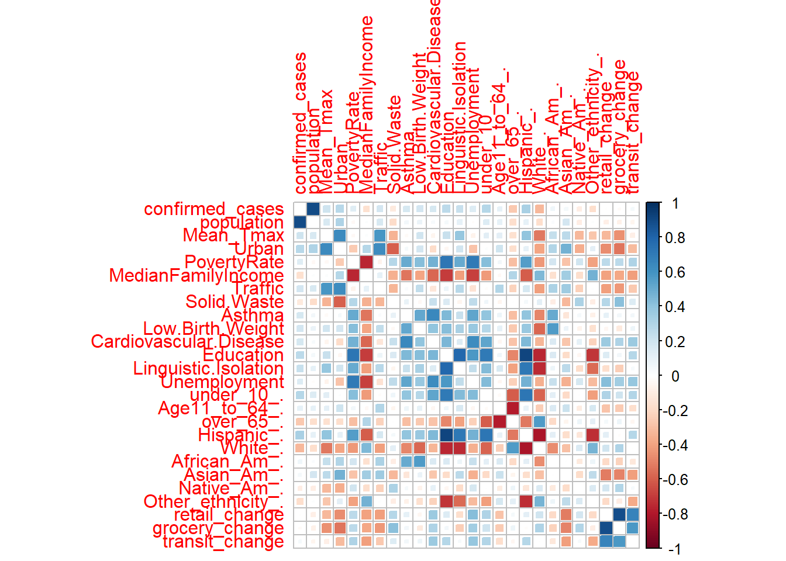
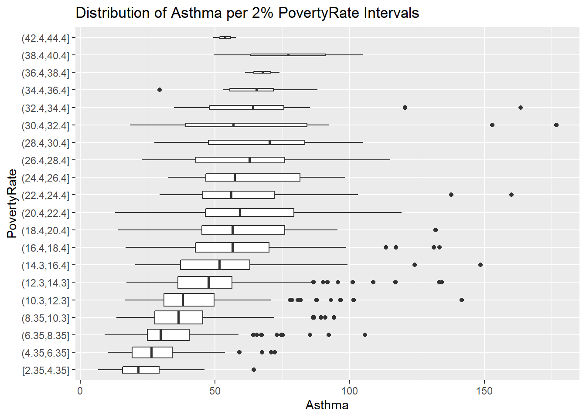
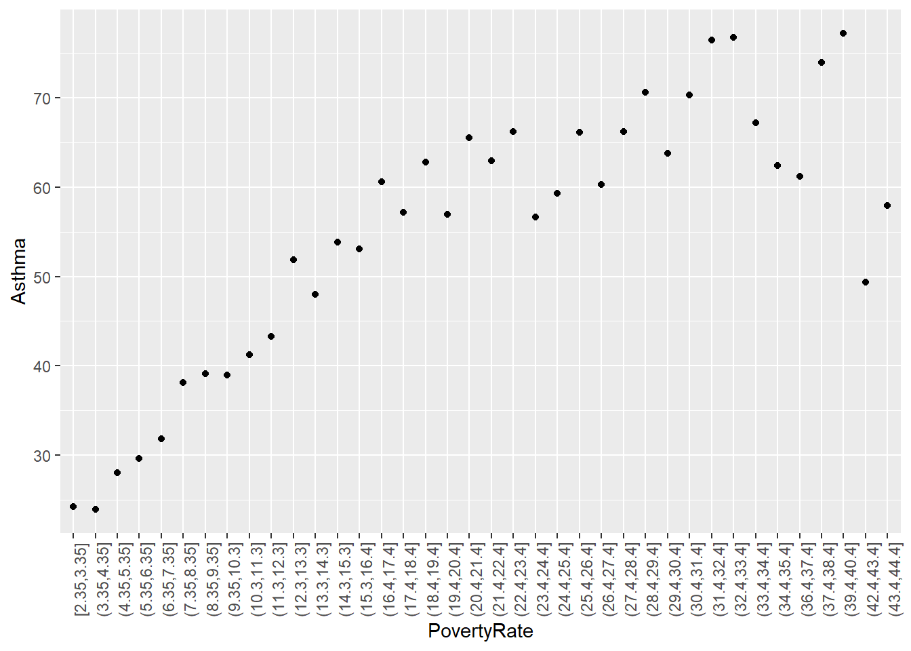
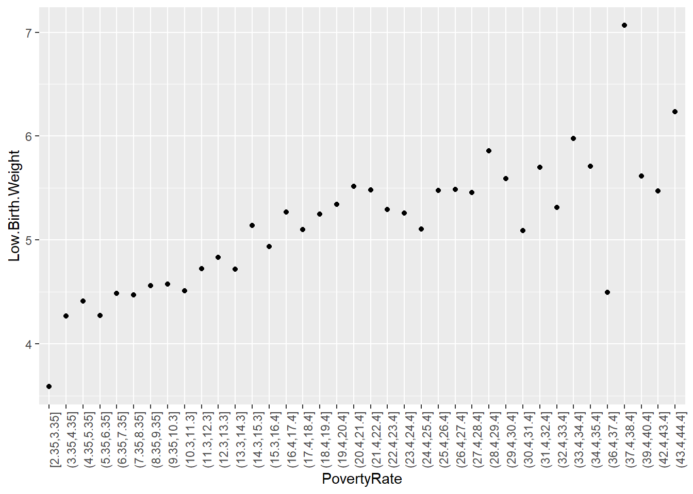
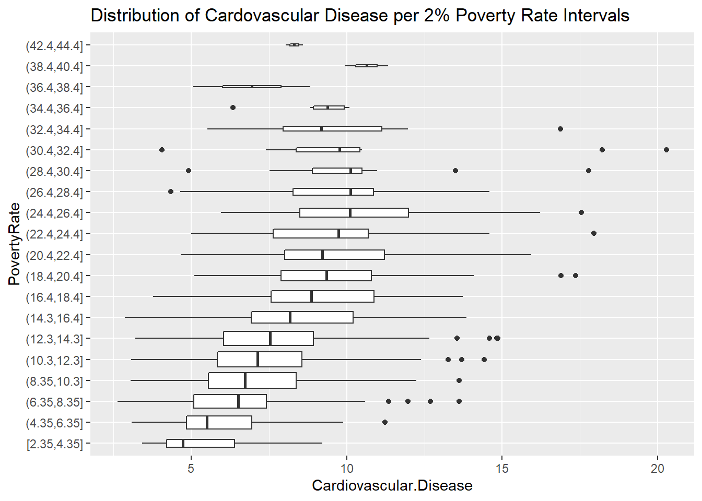
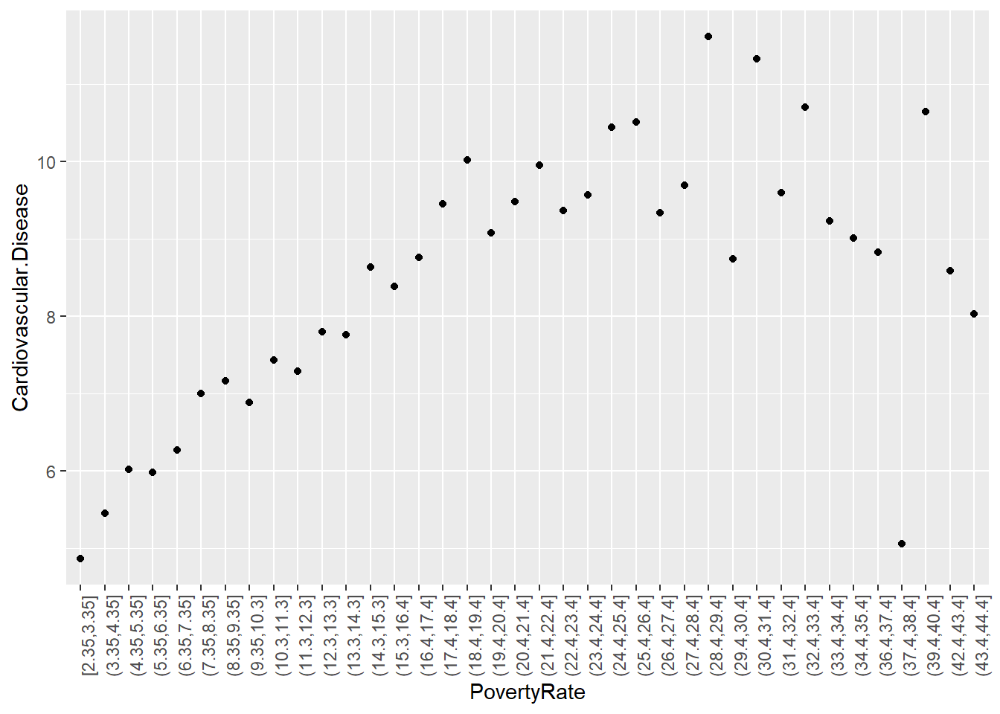

library(corrplot) # for the correlation plot
library(discrim) # for linear discriminant analysis
library(corrr) # for calculating correlation
library(knitr) # to help with the knitting process
library(MASS) # to assist with the markdown processes
library(tidyverse) # using tidyverse and tidymodels for this project mostly
library(tidymodels)
library(ggplot2) # for most of our visualizations
tidymodels_prefer()
library(ISLR) # For the Smarket data set
library(ISLR2) # For the Bikeshare data set
library(poissonreg)
library(klaR) # for naive bayes
library(randomForest)Building a Predictive Model on Covid-19 Cases
Using Machine Learning Models to Predict Covid-19 Outbreak Risk in Californian Cities
Introduction
This project is intended to build and deploy a machine learning classification model which categorizes California zip codes into low, moderate, or high risk for Covid-19 outbreaks by the end of the year of 2020. Risk predictions of Covid-19 were made using 30 different predictors including socioeconomic factors, and abiotic factors such as temperature, and pollution indicators. This project originates from a personal interest in public health and previous studying done on disease dynamics.
Packages and Libraries:
What is Covid-19?
Coronavirus disease (COVID-19) is an infectious disease caused by the SARS-CoV-2 virus. Most people infected with the virus will experience mild to moderate respiratory illness and recover without requiring special treatment. Some people become seriously ill and require medical attention. Older people and those with underlying medical conditions are more likely to develop serious illness and hospitalizaton. COVID-19 can affect people of all ages, including death. The virus can spread from an infected person’s mouth or nose in small liquid particles when they cough, sneeze, speak, sing or breathe. These particles range from larger respiratory droplets to smaller aerosols.
https://www.who.int/health-topics/coronavirus#tab=tab_1
My Data
The data set used for this research project was provided to me by a faculty member, Dr. Andrew MacDonald, who I had the opportunity to work under this summer during an undergraduate research internship. Dr. MacDonald merged data from the LA Times on socioeconomic factors and food access for different Californian zip codes with data reflecting Covid-19 case counts, weather, and pollution levels from the same zip codes during the Covid-19 pandemic in 2020. The original data set contained 273 columns of data.
Research Questions
- What factors of a population have underlying effects on the number of Covid-19 Cases?
- What kinds of populations are at higher risk for Covid-19 outbreaks?
- Is there evidence of socioeconomic correlation with higher Covid-19 rates?
- Is there evidence of pollution level effects on Covid-19 rates?
Exploratory Data Analysis
The original data set used for this project contained 55,620 observations of 268 variables. In the beginning stages of this project, this data set was tidied, cleaned, and reduced to fewer variables. In the following sections we’ll explore the distribution of our response variable “outbreak risk” and look at visualizations of key predictor distributions and relationships between predictors and case counts of Covid-19.
Loading and Exploring Raw Data
The pandemic data set is stored in a .csv format and can be read in from the directory:
setwd("C:/Users/18586/Desktop/PSTAT 131/PSTAT-131-final-project")
pandemic_weekly_og <- read.csv("data/pandemic_weekly.csv")
# changing naming to shorten
pandemic_weekly_og$retail_change <- pandemic_weekly_og$retail_and_recreation_percent_change_from_baseline
pandemic_weekly_og$grocery_change <- pandemic_weekly_og$grocery_and_pharmacy_percent_change_from_baseline
pandemic_weekly_og$transit_change <- pandemic_weekly_og$transit_stations_percent_change_from_baseline
pandemic_weekly_og$confirmed_cases <- pandemic_weekly_og$confirmed_cases_fill
pandemic_weekly_og$new_cases <- pandemic_weekly_og$new_cases_fillDimensions of the data:
dim(pandemic_weekly_og)[1] 55620 273This is a very large data set with 273 variables, all of which are not necessary. The variable labeled “confirmed_cases” will be the focus of our predictions. This column contains the cumulative number of positive Covid-19 cases per week in each zip-code during the 2020 year. The data set also contains a variable labeled “new_cases” which contains the new number of positive Covid-19 cases per week during the 2020 year. We can explore these two variables:
Cumulative Cases throughout 2020:
load("models/pandemic_cum.rda")
load("visuals/gg_cum.rda")
load("visuals/total_cases_cum.rda")
barplot(total_cases_cum$cumulative_cases, total_cases_cum$week,
names.arg = c(7:51),
ylab = "cumulative cases",
xlab = "week",
main = "Cumulative Number of Covid-19 Cases per Week in 2020",
col = "pink")
gg_cum
New Cases each week of 2020:
load("visuals/gg_new.rda")
load("visuals/total_cases.rda")
barplot(total_cases$new_cases, total_cases$week,
names.arg = c(7:51),
ylab = "new cases",
xlab = "week",
main = "New Number of Covid-19 Cases per Week in 2020",
col = "pink")
gg_new
Here we can see that there was a rise in cases around weeks 26 to 35 which are the months June through August and then there is another spike following week 46 which is about halfway through November to the rest of the year right around the winter holidays.
Converting Cumulative Cases into Proportions of Population for a Classification Model
My initial plan for this project was to build a regression model which predicted continuous case counts by the end of 2020 for each zip code. However, I decided to take this a step further and build a classification model which categorized zip codes into low, moderate, or high risk for a Covid-19 outbreak. Covid-19 cumulative case numbers are highly positively correlated with population so I decided to make a new column in the data set of the proportion of a population which has tested positive for Covid-19 by the end of the year 2020.
boxplot(pandemic_cum$prop, horizontal = TRUE, main = "Distribution of Proportion of Covid-19 Cases in a Population",
xlab = "Proportion of Covid-19 Cases in a Population", col = "light blue")
hist(pandemic_cum$prop, breaks = 50, main = "Distribution of Proportion of Covid-19 Cases in a Population",
xlab = "Proportion of Covid-19 Cases in a Population", col = "light blue")
Log Transformation:
boxplot(pandemic_cum$proplog, horizontal = TRUE, main = "Log Distribution of Proportion of Covid-19 Cases in a Population",
xlab = "Log Proportion of Covid-19 Cases in a Population", col = "light green")
hist(pandemic_cum$proplog, breaks = 50, main = "Log Distribution of Proportion of Covid-19 Cases in a Population",
xlab = "Log Proportion of Covid-19 Cases in a Population", col = "light green")
Choosing Splits for Low, Moderate, and High Risk for Covid-19 Outbreak:
As I was choosing a suitable split for what would be considered low, moderate, or high risk I looked for any visible distinctions in the histogram of the proportions distribution. Looking at the histogram of proportions above, I was able to identify a high split at 0.07, or 7%. For the low split, I thought the mode or peak would be a good split which happens to be about 0.02 or 2%. Following this, I then created a variable called “risk” where I classified proportions in each of these intervals into low, moderate, and high risk.
# creating low, moderate, and high categories based on
# log-transformed data cut by log(0.02) and log(0.07)
pandemic_cum$risk <-
cut(pandemic_cum$proplog, breaks =
c(-12, log(0.02) , log(0.07), 0),
labels = c("low", "moderate", "high")) # 0.03 and 0.07
# checking class imbalance
round(prop.table(table(pandemic_cum$risk)), 2)
low moderate high
0.30 0.58 0.12 There is some class imbalance with only 12% of the observations being categorized as high risk, so all models will be stratified on this variable to avoid any prediction problems.
Correlation Between Variables:
load("models/pandemic_cum.rda")
library(corrplot)
pandemic_cum %>%
dplyr::select(-c(prop, proplog)) %>%
dplyr::select(is.numeric) %>%
cor() %>%
corrplot(diag = FALSE,
method = 'square')Warning: Use of bare predicate functions was deprecated in tidyselect 1.1.0.
ℹ Please use wrap predicates in `where()` instead.
# Was:
data %>% select(is.numeric)
# Now:
data %>% select(where(is.numeric))
This correlation plot tells us a lot of information about the linear relationships between our predictor variables. In particular I found great interest in the high correlations Poverty Rate and Median Family Income had with the following predictor variables: Asthma, Low Birth Weight, Cardiovascular Disease, Education, Linguistic Isolation, Unemployment, Percentage of Population being under 10 years of age, Percentage of Population being Hispanic, and Percentage of Population being White. Three of these variables include medical conditions such as Asthma, Low Birth Weight, and Cardiovascular Disease so I decided to visualize each of these conditions’ relationships with Poverty Rate.
Mean Asthma and Poverty Rate
load("visuals/pov_asthma_boxplot.rda")
pov_asthma_boxplot
load("visuals/pov_asthma_gg.rda")
pov_asthma_gg
Mean Low Birth Weight and Poverty Rate
load("visuals/pov_low_birth_boxplot.rda")
pov_low_birth_boxplot
load("visuals/pov_low_birth_gg.rda")
pov_low_birth_gg
Mean Cardiovascular Disease and Poverty Rate:
load("visuals/pov_cardio_boxplot.rda")
pov_cardio_boxplotload("visuals/pov_cardio_gg.rda")
pov_cardio_gg
Variable Importance:
load("visuals/var_imp_plot.rda")
varImpPlot(model_spec_default, cex = 1, pch = 16, main = "Variable Importance Under Random Forest Model")